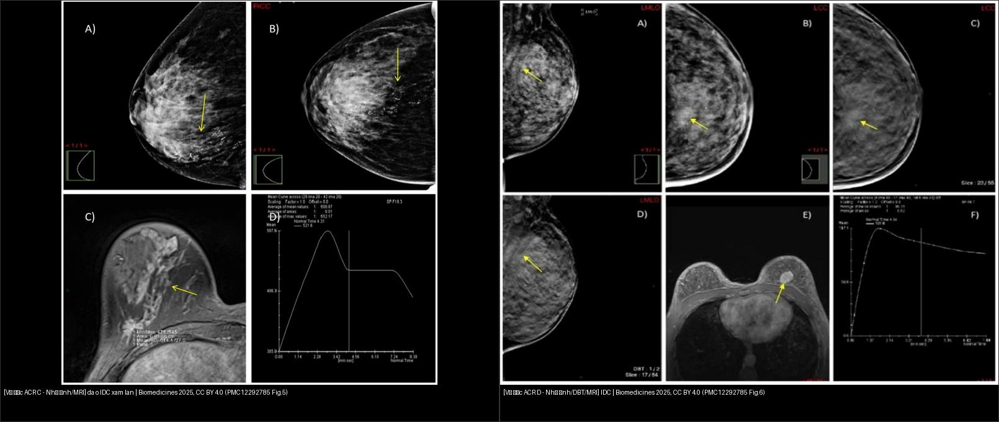
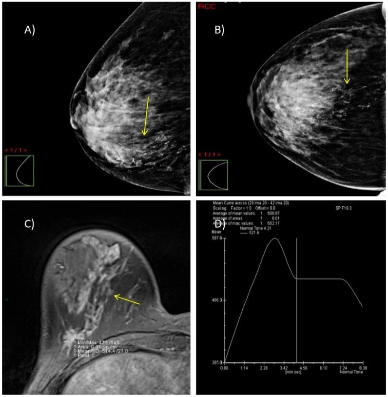
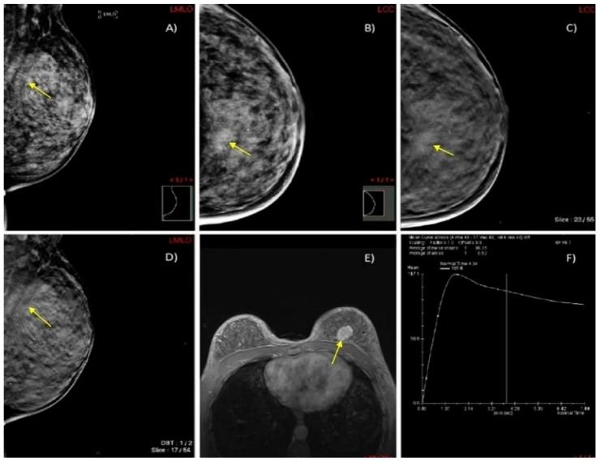
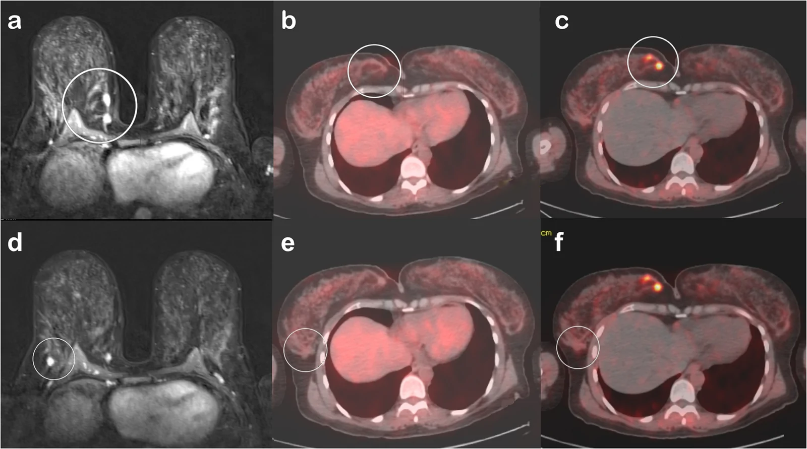
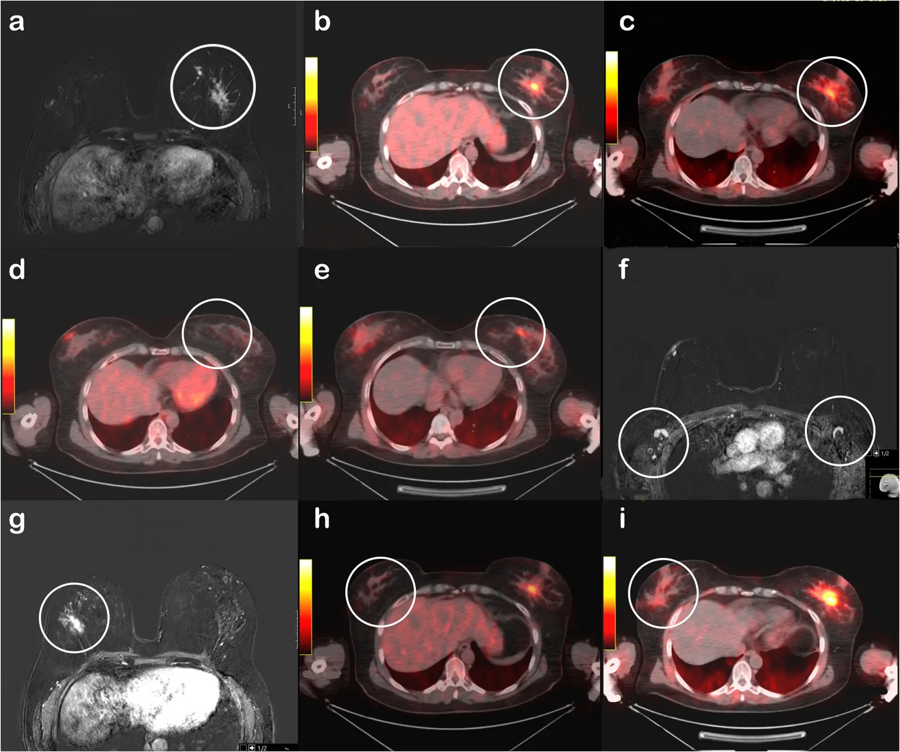
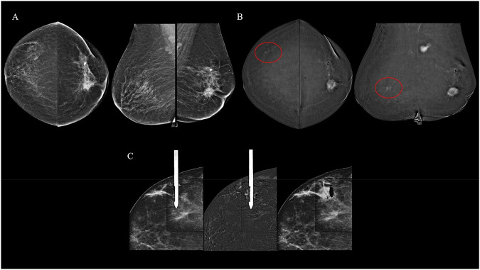
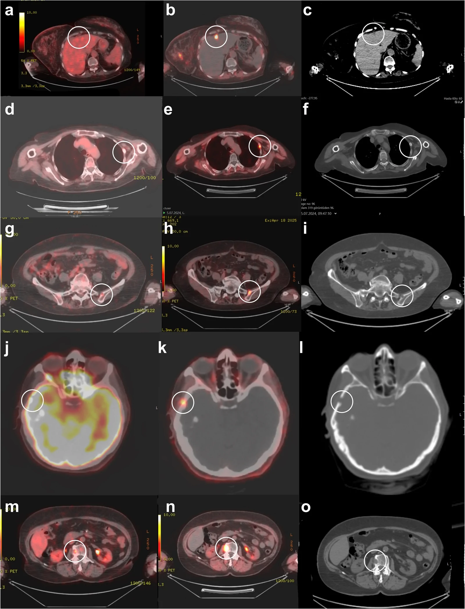

514 — Ung thư vú: giai đoạn TNM & MRI đánh giá lan rộng, đa ổ–đa trung tâm / Breast cancer staging & MRI extent
Tags: pattern:khoi-vu pattern:da-o-vu vung:vu score:TNM protocol:MRI-vu
Mức chắc chắn (certainty): tổng hợp y văn (literature synthesis) — nhóm tự biên từ y văn mở (tổng quan đa ổ/đa trung tâm, ca MRI/DBT/CEM, PET) + bảng TNM 8th, chưa gắn một ca nguyên văn đơn lẻ.
1. Tổng quan bệnh học – cơ chế hình ảnh
- Vì sao phải phân giai đoạn: giai đoạn TNM quyết định bảo tồn (breast-conserving surgery — BCS) hay đoạn nhũ (mastectomy), xạ trị hố vú, và hóa trị tân bổ trợ (neoadjuvant). Ung thư vú không lan theo phần tư mà theo dòng bạch mạch/sinh học → TNM hiện đại lấy sinh học + hạch làm trọng tâm, phần tư chỉ còn ý nghĩa cho kế hoạch mổ.
- Đa ổ (multifocal — MF) vs đa trung tâm (multicentric — MC):
- MF = ≥ 2 ổ trong cùng một phần tư (same quadrant), cách nhau 2–5 cm.
- MC = các ổ ở phần tư khác nhau hoặc cách > 5 cm, đôi khi khác thùy tuyến.
- Lưu ý: hai khái niệm này là mô tả để mổ — T vẫn lấy theo ổ xâm lấn lớn nhất và thêm hậu tố “(m)” (multifocal), không cộng dồn kích thước (AJCC/UICC 8th).
- Dịch tễ (định lượng): MF/MC gặp ~10–24% tất cả ung thư vú, cao hơn khi dùng MRI hoặc cắt toàn bộ tuyến đếm tổn thương; gắn với thể tiểu thùy (ILC), tuổi trẻ, hạch dương tính nhiều hơn — nạo hạch dương ~55–60% ở MF/MC so với ~45% ở unifocal; ổ chính trung bình 3,68 cm (MF) so với 3,21 cm (unifocal).
- TẠI SAO MRI phát hiện thêm ổ: u thể ngấm tân mạch rò rỉ → ngấm nhanh thì động mạch rồi thoát sớm (đường cong Type III washout / Type II plateau), trong khi mô tuyến lành ngấm chậm tăng dần (Type I). Vì nhũ ảnh/DBT nhìn suy giảm thể tích (2D chồng), u nhỏ trong tuyến đặc (dense — ACR C/D) dễ bị “nuốt” → MRI đa mặt phẳng + động học lộ thêm ổ. Số liệu: MRI phát hiện ổ ẩn thêm ~10–30% bệnh nhân; ~10–20% (MF) và ~5–10% (MC) tổng ca.
- TẠI SAO nang/hoại tử làm tín hiệu khác nhau: u nghèo đệm + mật độ tế bào cao → DWI sáng, ADC thấp (< 1,0 × 10⁻³ mm²/s); u nhầy/nang → T2 rất sáng, ngấm viền, không washout.
- AJCC/UICC 8th — ngưỡng T (u xâm lấn, đo ổ lớn nhất): Tis (DCIS) → T1mi ≤ 1 mm → T1a > 1–5 mm → T1b > 5–10 mm → T1c > 10–20 mm → T2 > 20–50 mm → T3 > 50 mm → T4 (T4a thành ngực, T4b da loét/nốt vệ tinh/phù, T4c cả hai, T4d thể viêm).
- AJCC/UICC 8th — ngưỡng N (hạch): pN0(i+) chỉ tế bào đơn lẻ ITC ≤ 0,2 mm / < 200 tế bào**; **pN1mi** vi di căn **> 0,2–2,0 mm / 200–2.000 tế bào; pN1 1–3 hạch nách (± hạch vú trong là hạch gác); pN2 4–9 hạch nách hoặc hạch vú trong lâm sàng dương nhưng không hạch nách; pN3 ≥ 10 hạch nách / hạch dưới đòn / hạch vú trong lâm sàng dương kèm ≥ 1 hạch nách / hạch thượng đòn cùng bên.
- M: M0 = chưa di căn xa; M1 = di căn xa (xương, gan, phổi, não). TẠI SAO PET có vai trò: tế bào u tăng đường phân (Warburg) → ¹⁸F-FDG tập trung; PET toàn thân tìm di căn xa + hạch trung thất/thượng đòn ở bệnh nhân giai đoạn tiến xa.
2. Mẫu hình + chẩn đoán phân biệt theo vị trí (Gamut)
- Khối đơn độc (unifocal) → ác xâm lấn (IDC/ILC), lành (bướu sợi tuyến, nang) — đã học ở
510. - Nhiều ổ cùng phần tư (MF) → ung thư biểu mô một ổ có vệ tinh (satellite), vs. nhiều bướu sợi tuyến, vs. sẹo–u tuyến xơ (complex sclerosing lesion).
- Nhiều ổ khác phần tư / hai bên (MC, hai bên) → ung thư tiểu thùy (ILC) rất ưu thế, vs. di căn vú thể tiểu thùy, vs. di căn buồng trứng (Krukenberg) đối xứng hai bên — trong ung thư vú hai bên luôn nghĩ ILC + di truyền (BRCA/CDH1).
- Tổn thương không tạo khối (non-mass enhancement — NME) → DCIS lan theo ống, vs. viêm, vs. thay đổi hormone — thường đổi giai đoạn âm thầm, đòi hỏi sinh thiết định vị bằng MRI/CEM.
- Gợi nhớ tiếp cận 3 tầng vú: T = kích thước ổ lớn nhất (+ vệ tinh, thành ngực/da) → N = hạch nách/mạch vú trong/thượng đòn → M = xương/gan/phổi/não.
3. Bảng so sánh phân biệt (ma trận đối chiếu)
| Thực thể (entity) | Hình ảnh điển hình | Chốt vào (rule-in) | Chốt loại (rule-out) | Gợi ý xác nhận |
|---|---|---|---|---|
| Unifocal ác (IDC) | Ổ đơn độc trục đứng, bờ gai, DWI sáng, washout | 1 ổ + bờ gai + Type III | Nhiều ổ tách biệt (≥ 2 ổ) → MF/MC | Sinh thiết lõi + MRI nếu mổ bảo tồn |
| Đa ổ cùng phần tư (MF) | ≥ 2 ổ tách biệt trong 1 phần tư, cách 2–5 cm, cùng chuỗi ngấm | 2 ổ cùng phần tư + cùng động học ác | Khoảng cách > 5 cm / khác phần tư → MC | MRI + sinh thiết từng ổ; T theo ổ lớn nhất + “(m)” |
| Đa trung tâm (MC, thường ILC) | Nhiều ổ khác phần tư, có thể hai bên, NME lan; DWI sáng | Khác phần tư + ILC + hay hai bên | Ổ đơn độc → xếp theo ổ đó | Sinh thiết hai bên + tư vấn di truyền (CDH1/BRCA); cân nhắc đoạn nhũ hai bên |
| DCIS (vôi hóa/NME) | Vi vôi hóa phân nhánh hoặc NME phân thùy, không khối | NME phân thùy/đường + vôi phân nhánh | Khối đặc ngấm washout → xâm lấn | Sinh thiết định vị MRI/CEM (nhũ ảnh/US mù) |
| Tổn thương hàng xóm lành (fibroadenoma, nang) | Bầu dục ngang, bờ đều, Type I tăng dần | Bờ đều + Type I + ổn định | Gai + washout → ác | So phim cũ; theo dõi (510) |

Trái: vú đặc ACR C — nhũ ảnh (A,B) chỉ thấy cụm vi vôi hóa phân thùy, MRI (C) lộ khối ngấm lan từ núm đến trước cơ ngực + đường cong Type III washout (D) → đa ổ. Phải: vú đặc ACR D, nhũ ảnh chỉ là biến dạng cấu trúc mờ, DBT mới rõ bờ gai, MRI thấy tổn thương lan rộng. Nguồn: Biomedicines 2025 (PMC12292785), CC BY 4.0. Ảnh ghép letterbox.4. Protocol chụp + phân giai đoạn TNM (AJCC/UICC 8th)
- Nhũ ảnh 2D + DBT (tomosynthesis) là đầu tay; vú đặc ACR C/D hoặc nghi ILC → bổ sung siêu âm + MRI.
- MRI vú có cản quang (DCE-MRI): T2W fat-sat + T1W động (trước/1–2–6 phút) + trừ ảnh (subtraction) + DWI/ADC; đọc đường cong động học Type I/II/III và MIP (maximum intensity projection) tìm ổ vệ tinh. Chỉ định MRI trước mổ: vú đặc, ILC, chênh lệch kích thước lâm sàng–nhũ ảnh, tính BCS, sàng lọc vú đối diện ở nguy cơ cao.
- CEM (contrast-enhanced mammography) là lựa chọn thay thế khi không MRI được (chống chỉ định/claustrophobia) — độ nhạy tương đương cho tổn thương ngấm; sinh thiết định vị bằng CEM cho tổn thương chỉ thấy trên CEM.
- ¹⁸F-FDG PET/CT: không dùng thường quy cho T1–T2N0; cân nhắc giai đoạn tiến xa (IIIA–IIIC), thể viêm, tái phát, nghi di căn, và PET xương; lưu ý PET bỏ sót u nhỏ/hạch nhỏ/thể tiểu thùy (FDG-avidity thấp).
- Đo kích thước: lấy ổ xâm lấn lớn nhất, thêm “(m)” khi đa ổ; đối chiếu nhũ ảnh ↔ siêu âm ↔ MRI ↔ mô bệnh vì MRI có thể “thổi phồng/thu nhỏ” kích thước so với mô bệnh.
flowchart TD
A[Ung thư vú - đánh giá lan rộng] --> B{Vú đặc / ILC / chênh lệch kích thước?}
B -->|Có| C[MRI DCE + DWI + trừ ảnh]
B -->|Không| D[Nhũ ảnh + DBT + siêu âm]
C --> E{Số ổ?}
D --> E
E -->|1 ổ| F[T theo ổ xâm lấn lớn nhất]
E -->|Nhieu o cung phan tu, 2-5 cm| G[MF: T lon nhat + m]
E -->|Khac phan tu hoac > 5 cm| H[MC: can doan nhu / tu van di truyen]
F --> I[Danh gia hach nach: SLNB truoc tien]
G --> I
H --> I
I --> J{Hach nghiem pham > 2 mm?}
J -->|Khong| K[BSLT theo TNM 8th - bao ton neu duoc]
J -->|Co| L[BSLT/BMT + BNCT + xa tri]
5. Biến thể bình thường và cạm bẫy
- MRI “phát hiện quá mức” (overdiagnosis): nhiều ổ “nghi” trên MRI lại là thay đổi lành tính, xơ–tuyến, viêm → tăng tỷ lệ đoạn nhũ oan. Mỗi ổ mới bắt buộc sinh thiết xác nhận trước khi đổi kế hoạch mổ.
- Sai số kích thước: MRI dưới/trên ước kích thước so với mô bệnh (nhất là DCIS thành phần khi u xâm lấn) → nguy cơ rìa dương. Luôn đối chiếu mô bệnh sau mổ để hiệu chỉnh giai đoạn p.
- Vú đặc ACR D: nhũ ảnh có thể âm tính giả hoàn toàn với u nhỏ — không loại trừ ung thư chỉ bằng nhũ ảnh (xem ca phải của composite).
- ILC dễ sót: mô tiểu thùy desmoplastic không tạo khối đặc, ngấm mờ, hay di căn màng não/phúc mạc/buồng trứng → khi có đa ổ/hai bên luôn nghĩ ILC + tư vấn di truyền.
- Thành phần “(m)” hay bị đánh sai: gắn T sai giữa ổ lớn nhất và tổng; nhớ T = ổ xâm lấn lớn nhất (cộng thêm hậu tố (m)), không cộng tất cả các ổ.
- NME sau phẫu thuật/xạ trị/hormone có thể chỉ là thay đổi lành → đối chiếu lâm sàng và phim cũ.
- Sister Mary Joseph / nốt rốn hoặc hạch thượng đòn có thể là dấu hiệu đầu tiên của bệnh tiến xa — đừng bỏ sót khi “chỉ” đọc tuyến vú.
6. Tự lượng giá — Blind Quiz
Ca 1 — Nữ 47 tuổi, vú đặc ACR C, nhũ ảnh chỉ thấy cụm vi vôi hóa. Đọc chuỗi ảnh A–D.

- Gợi ý lâm sàng (clinical context): vú đặc, tổn thương không sờ rõ.
- Câu hỏi: Mô tả dấu hiệu chính? Nhũ ảnh đã đủ chẩn đoán chưa? MRI bổ sung gì? Đường cong (D) nói gì?
Bấm để hiện đáp án (findings + chẩn đoán)
- Dấu hiệu (findings): (A,B) vi vôi hóa phân thùy (segmental) ở đường nối các phần tư dưới (mũi tên vàng); (C) MRI T1 fat-sat sau tiêm: khối ngấm lan rộng từ núm đến khoang trước cơ ngực; (D) đường cong Type III “washout”.
- Chẩn đoán (diagnosis): ung thư biểu mô ống xâm lấn đa ổ (multifocal IDC) grade 2 — vì vôi hóa phân thùy gợi DCIS/xâm lấn theo ống, và đường cong washout khẳng định tân mạch ác. MRI lộ mức lan thực mà nhũ ảnh trong vú đặc bỏ sót.
- Nguồn ảnh: Biomedicines 2025 (PMC12292785) Fig. 5, CC BY 4.0.
Ca 2 — Nữ 45 tuổi, vú cực đặc ACR D, nhũ ảnh MLO/CC mờ. DBT và MRI giúp gì?

- Hỏi: Vì sao nhũ ảnh 2D hụt? Dấu hiệu nào trên DBT/MRI chốt ác tính?
Bấm để hiện đáp án (findings + chẩn đoán)
- Dấu hiệu (findings): (A,B) nhũ ảnh chỉ là biến dạng cấu trúc mờ phần tư trên trong trái; (C,D) DBT làm rõ khối bờ gai (spiculate mass); (E) MRI thấy tổn thương ngấm lan khoang trước cơ ngực; (F) Type III washout.
- Chẩn đoán (diagnosis): IDC vú trái — vì DBT tách lớp mô đặc → lộ bờ gai; MRI xác định mức lan trước khi mổ.
- Nguồn ảnh: Biomedicines 2025 (PMC12292785) Fig. 6, CC BY 4.0.
Ca 3 — Nữ 42 tuổi IDC đã sinh thiết. MRI thấy THÊM hai ổ. Đa ổ hay đa trung tâm? Điều trị gì?

- Hỏi: Ổ nào là “đa ổ”, ổ nào là “đa trung tâm”? PET nào dương?
Bấm để hiện đáp án (findings + chẩn đoán)
- Dấu hiệu (findings): (a) MRI hai ổ ngấm cạnh nhau 10 mm và 8 mm ở phần tư dưới trong → đa ổ (primary + additional focus); (d) MRI ổ ngấm 8 mm phần tư dưới ngoài → đa trung tâm (multicentric). (b,e) ¹⁸F-FDG PET không bắt cả hai; (c) ⁶⁸Ga-FAPI PET bắt mạnh ổ đa ổ (SUVmax 10), (f) ổ đa trung tâm không bắt.
- Chẩn đoán (diagnosis): IDC đa ổ + đa trung tâm; mô bệnh sau mổ giống hệt về sinh học (ER 85%, PR 95%, HER2 âm). Vì lan rộng hai phần tư → đoạn nhũ tiết kiệm da (skin-sparing mastectomy); nhớ T theo ổ lớn nhất + (m), không cộng kích thước.
- Phản biện: ca không điển hình ở chỗ FDG bỏ sót hoàn toàn, còn FAPI nhạy hơn — nhưng FAPI hiện chưa phải chuẩn lâm sàng; chốt vẫn là mô bệnh học.
- Nguồn ảnh: Eur J Nucl Med Mol Imaging 2026 (PMC13526084) Fig. 5, CC BY 4.0.
Ca 4 — Nữ 50 tuổi tiền mãn kinh, sinh thiết ILC vú trái. MRI hãy mô tả trước khi xem đáp án.

- Hỏi: Vì sao ILC hay “lan ngầm”? MRI giúp gì so với PET? Có cần soi vú đối diện không?
Bấm để hiện đáp án (findings + chẩn đoán)
- Dấu hiệu (findings): (a) MRI: khối chính 35 × 20 mm phần tư ngoài-giữa trái + nhiều ổ vệ tinh nhỏ phía trong; (g) NME 30 × 10 mm vú phải; hạch nách hai bên vỏ dày nhẹ nhưng không bắt FDG/FAPI.
- Chẩn đoán (diagnosis): ILC hai bên (trái 40 mm, phải 35 mm) — mô bệnh xác nhận; MRI phát hiện nhiều ổ vệ tinh hơn cả hai PET (a). Vì ILC đa ổ + hai bên → đoạn nhũ tiết kiệm da hai bên; cân nhắc tư vấn di truyền (CDH1/BRCA).
- Nguồn ảnh: Eur J Nucl Med Mol Imaging 2026 (PMC13526084) Fig. 7, CC BY 4.0.
Ca 5 — CEM trước mổ: ổ chính vú trái, CEM còn thấy tổn thương ở VÚ PHẢI. Bước tiếp theo?

- Hỏi: Siêu âm và DBT “không thấy” tổn thương đối diện thì làm gì?
Bấm để hiện đáp án (findings + chẩn đoán)
- Dấu hiệu (findings): (A) LE thấy ổ chính vú trái; (B) ảnh tái hợp (recombined) thấy NME nghi ngờ phần tư trên ngoài vú phải (vòng đỏ) nhưng không tương ứng trên siêu âm “second-look” hay DBT; (C) sinh thiết định vị bằng CEM.
- Chẩn đoán (diagnosis): DCIS vú phải (tổn thương chỉ thấy trên CEM) — vì vậy khi siêu âm/DBT âm tính mà nghi ngờ vẫn phải sinh thiết định vị theo phương thức đã phát hiện (MRI/CEM).
- Nguồn ảnh: Insights into Imaging 2026 (PMC13315364) Fig. 5, CC BY 4.0.
Ca 6 — PET: ổ vú không bắt FDG nhưng FAPI bắt; còn “những ổ khác” ở gan/xương/sọ. Đây là gì?

- Hỏi: Các ổ này xếp M mấy? Vì sao FDG có thể âm tính?
Bấm để hiện đáp án (findings + chẩn đoán)
- Dấu hiệu (findings): (b) nốt dưới bao gan ~ 8 mm (SUVmax 14,7, FAPI) xác nhận sinh thiết; (e) xương sườn (SUVmax 9,6); (i) xương chậu; (l) xương sọ (lytic); (n) thân đốt L3 (SUVmax 15,7). Ở các ổ này ¹⁸F-FDG bắt rất nhạt hoặc không bắt.
- Chẩn đoán (diagnosis): di căn xa (M1) — vì vậy xếp giai đoạn IV; các ca đều luminal A với FDG-avidity thấp nên FDG dễ âm tính giả, FAPI nhạy hơn (nhưng chưa phải chuẩn lâm sàng).
- Nguồn ảnh: Eur J Nucl Med Mol Imaging 2026 (PMC13526084) Fig. 8, CC BY 4.0.
Bài liên quan chéo
- 500 – Tổng quan Vú & Sản phụ khoa
- 510 – Vú & BI-RADS: nhũ ảnh, siêu âm & MRI
- 512 – Vi vôi hóa, biến dạng cấu trúc & túi ngực
- 516 – Hình ảnh vú sau điều trị: sẹo vs tái phát, hoại tử mỡ & BIA-ALCL
- 525 – Ung thư nội mạc & cổ tử cung: FIGO trên MRI
- 535 – Ung thư buồng trứng, phúc mạc & u Krukenberg (di căn hai bên phân biệt vú thể tiểu thùy)
- 022 – Khối phổi & TNM (so sánh hệ TNM)
Ảnh
514_multifocal-IDC_Mammo-MRI_PMC12292785-Fig5.jpg,514_vi-dai-o_Mammo-DBT-MRI_PMC12292785-Fig6.jpg,514_multifocal-multicentric_MRI-PET_PMC13526084-Fig5.webp,514_ILC-satellite_MRI-PET_PMC13526084-Fig7.webp,514_di-can-xa_PET-CT_PMC13526084-Fig8.webp,514_CEM-staging_PMC13315364-Fig5.jpg,composite_vu-dac-DM-vs-MRI.jpg. Nguồn + giấy phép từng ảnh trongimages/CREDITS.md.
Không dùng để chẩn đoán độc lập khi chưa có người hướng dẫn.